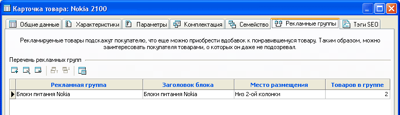
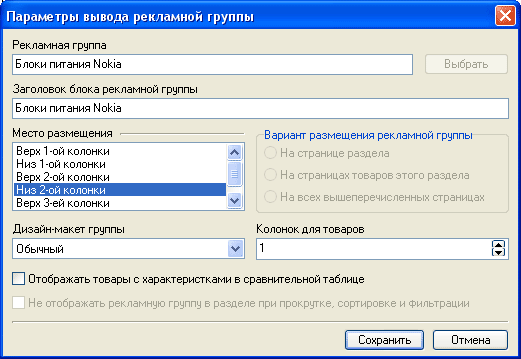

Для каждого товара на закладке "Рекламные группы" можно указать товары, например, сопутствующие, которые будут интересны покупателю в качестве дополнения к основному товару (например, при продаже мобильного телефона сопутствующим товаром может быть блок питания).

Задать сами рекламные группы и определить, какие товары в них входят, необходимо в менеджере рекламных групп. При добавлении рекламной группы к товару необходимо будет задать настройки ее отображения:

Таким образом, одна и таже рекламная группа может отображаться под разными загловками, в разных местах страницы и в разном стиле оформления (дизайн-макет группы). В случае, если требуется одним и тем же товарам назначить одинаковую рекламную группу, можно воспользоваться функцией группового назначения: "Товары - Особые - Рекламные группы - Назначить рекламную группу для группы товаров".